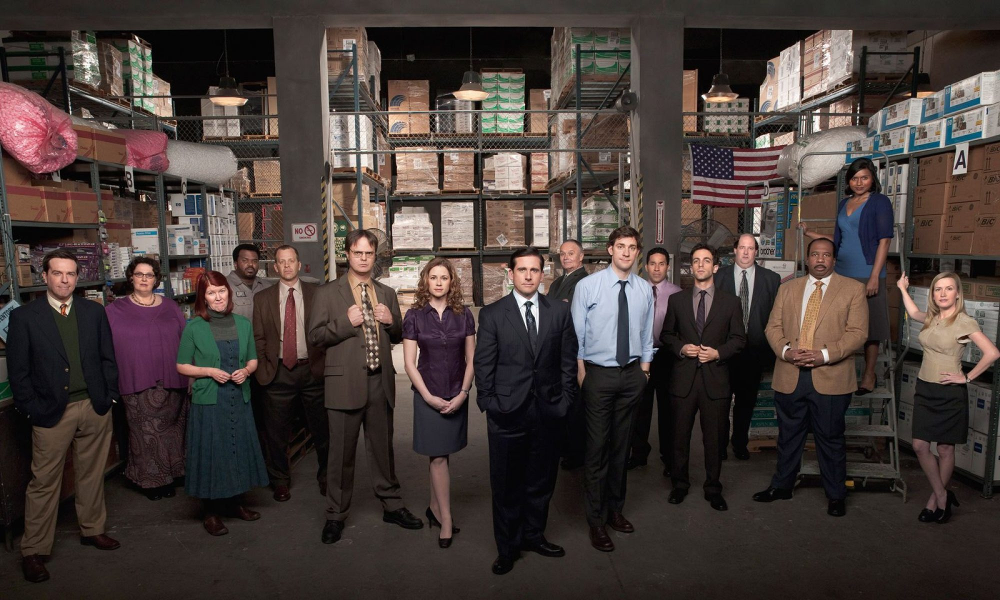

"The Office" é eleita a melhor série de comédia de todos os tempos
Pesquisa com fãs e especialistas coloca a série no topo do ranking.
Publicado em 2026 • Redação Geek News

Uma pesquisa recente realizada com fãs de televisão e especialistas em entretenimento colocou The Office como a melhor série de comédia de todos os tempos.
A produção, que acompanha o cotidiano dos funcionários da empresa fictícia Dunder Mifflin, conquistou o público com seu humor único e personagens carismáticos.
Personagens como Michael Scott, Jim Halpert e Dwight Schrute se tornaram extremamente populares ao longo das temporadas.
O estilo de falso documentário utilizado pela série também ajudou a criar momentos memoráveis de humor.
Mesmo anos após o fim da série, novos fãs continuam descobrindo o programa através das plataformas de streaming.
Diversas cenas icônicas da série continuam circulando nas redes sociais em forma de memes.
Especialistas afirmam que o sucesso duradouro da série se deve à forma como ela mistura humor com momentos emocionais.
Com esse reconhecimento, The Office reforça sua posição como uma das produções mais importantes da história da televisão.